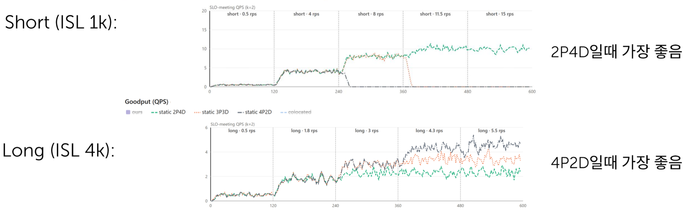
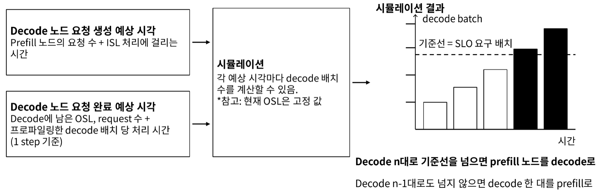
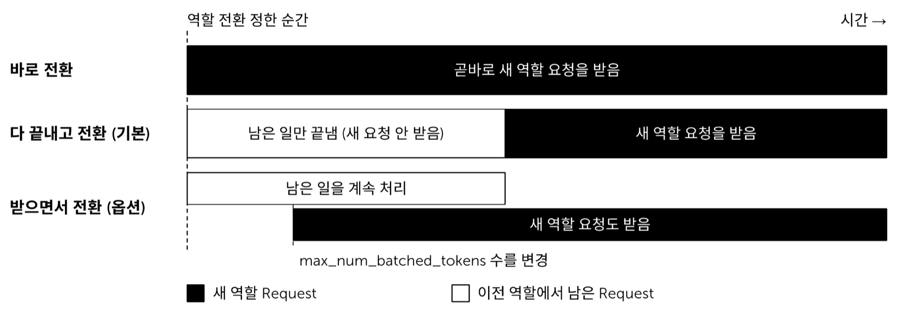
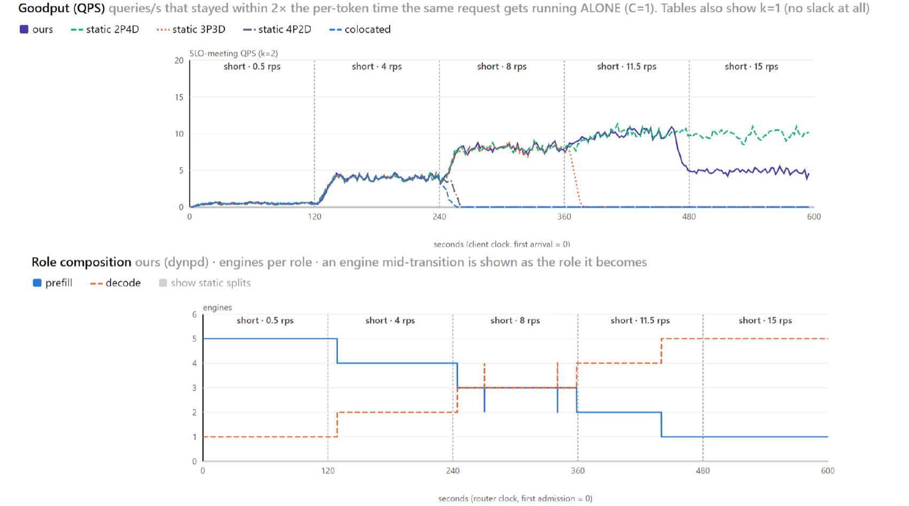
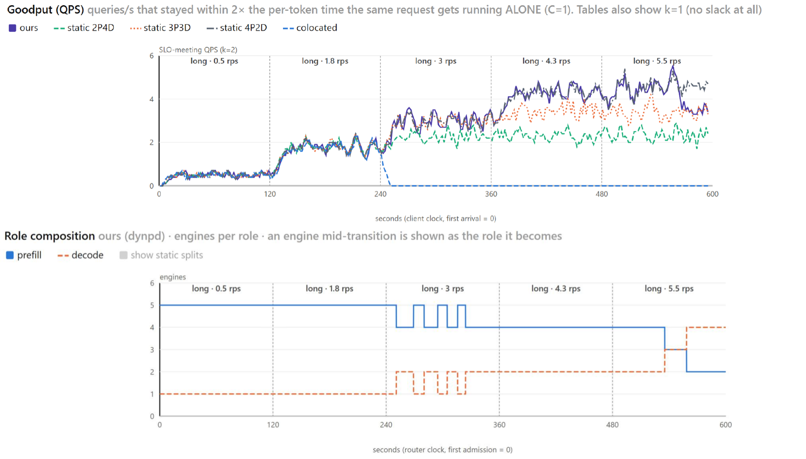
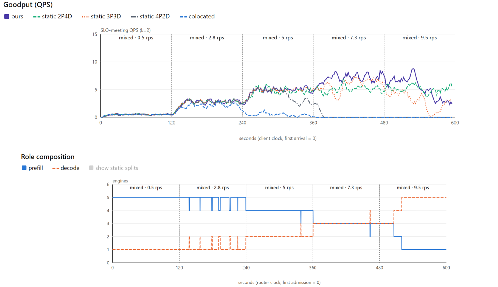

Prefill/decode disaggregation forces a decision nobody can make correctly in advance: how many engines go to each role. The right split depends on the traffic, and the traffic changes. This note walks through a scheduler that stops guessing — it simulates the near future every 100 ms, asks only "will the decode side still meet its per-token SLO?", and converts an engine from one role to the other when the answer is no. Measured on a 3-node MI250 cluster, it converges on its own to the split a human would have hand-picked for each workload — and the write-up is equally clear about where it breaks. Prefill/decode 분리는 아무도 미리 맞힐 수 없는 결정을 강요한다 — 어느 역할에 엔진을 몇 대 줄 것인가. 정답은 트래픽에 달렸고, 트래픽은 변한다. 이 노트는 추측을 그만두는 스케줄러를 따라간다. 100 ms 마다 가까운 미래를 시뮬레이션해서 "decode 쪽이 토큰당 SLO 를 계속 지킬 수 있는가" 하나만 묻고, 아니면 엔진의 역할을 바꾼다. 3노드 MI250 클러스터 실측에서 각 워크로드마다 사람이 손으로 골랐을 비율로 스스로 수렴한다 — 그리고 어디서 깨지는지도 똑같이 분명하게 적혀 있다.
Running the two phases of generation on separate engines. Prefill reads the prompt in one compute-heavy pass; decode emits tokens one at a time and is memory-bound. Splitting them stops a long prompt from stalling everyone's token stream.생성의 두 단계를 서로 다른 엔진에서 돌리는 것. prefill 은 프롬프트를 한 번에 읽는 연산 위주 작업이고, decode 는 토큰을 하나씩 뱉는 메모리 위주 작업이다. 갈라 두면 긴 프롬프트 하나가 모두의 토큰 스트림을 멈추는 일이 없어진다.
Time To First Token — how long before anything appears. Time Per Output Token — the gap between tokens after that. TTFT is prefill's score; TPOT is decode's. They trade off: give an engine to prefill and TTFT improves while TPOT gets worse.Time To First Token — 무언가 나타나기까지의 시간. Time Per Output Token — 그 뒤 토큰 사이의 간격. TTFT 는 prefill 의 성적표, TPOT 는 decode 의 성적표다. 둘은 맞바꾸는 관계다. 엔진 하나를 prefill 에 주면 TTFT 는 좋아지고 TPOT 는 나빠진다.
Not "requests served" but "requests served within the SLO". A request that finished slowly counts as zero. That is why goodput can fall while raw throughput rises."처리한 요청 수" 가 아니라 "SLO 안에 처리한 요청 수". 느리게 끝난 요청은 0점이다. 그래서 raw throughput 이 오르는데 goodput 이 떨어지는 일이 생긴다.
The target is 2× the TPOT the same request would get running completely alone (concurrency = 1). A per-request, self-relative bar — no absolute millisecond number to argue about.목표는 같은 요청이 혼자 돌 때(concurrency = 1) 나오는 TPOT 의 2배다. 요청마다 자기 자신을 기준으로 삼는 잣대라, 절대 밀리초 수치를 두고 다툴 일이 없다.
How many requests one decode engine is stepping at once. Bigger batch = better utilisation but slower per-token time. So "meet the TPOT SLO" translates directly into "keep the batch below this number".decode 엔진 하나가 동시에 진행 중인 요청 수. 배치가 클수록 이용률은 좋고 토큰당 시간은 느려진다. 그래서 "TPOT SLO 를 지켜라" 가 곧바로 "배치를 이 수 아래로 유지하라" 로 번역된다.
Input and output sequence length — prompt tokens in, generated tokens out. ISL sets the prefill cost; OSL sets how long a request occupies a decode slot.입력·출력 시퀀스 길이 — 들어가는 프롬프트 토큰 수와 생성되는 토큰 수. ISL 이 prefill 비용을 정하고, OSL 이 그 요청이 decode 슬롯을 얼마나 오래 붙잡는지를 정한다.
Once you disaggregate, you have to say how many engines are prefill and how many are decode. Six engines can be 2P4D, 3P3D, 4P2D, and so on. The deck's opening claim is that this choice is not free: pick wrong and you are wasting hardware, and inference traffic is hard to predict, so you will pick wrong. 분리를 하고 나면 몇 대를 prefill 로, 몇 대를 decode 로 둘지 말해야 한다. 엔진 6대면 2P4D, 3P3D, 4P2D … 가 된다. 발표자료의 첫 주장은 이 선택이 공짜가 아니라는 것이다. 잘못 고르면 하드웨어를 버리는 셈인데, 추론 트래픽은 예측하기 어려우니 잘못 고르게 된다.

Goodput (SLO-meeting QPS, k=2) over a 10-minute run that steps the offered load upward. Series are the static splits 2P4D / 3P3D / 4P2D and a colocated baseline. Top: short prompts (ISL 1k) — 2P4D wins. Bottom: long prompts (ISL 4k) — 4P2D wins. Figure from the original deck, p.2.부하를 단계적으로 올리는 10분 실행 동안의 goodput(SLO 를 지킨 QPS, k=2). 계열은 정적 분할 2P4D / 3P3D / 4P2D 와 colocated 기준선이다. 위: 짧은 프롬프트(ISL 1k) — 2P4D 가 이긴다. 아래: 긴 프롬프트(ISL 4k) — 4P2D 가 이긴다. 원 자료 p.2 그림.
The two halves of that figure are the whole argument. Same cluster, same engines, opposite best answers. Short prompts are cheap to prefill and the pressure lands on decode, so you want four decode engines. Long prompts invert it — prefill becomes the bottleneck and you want four prefill engines. A static configuration is right for exactly one of these and wrong for the other, and real traffic is a moving mixture of both. 저 그림의 위아래가 논증의 전부다. 같은 클러스터, 같은 엔진, 정반대의 정답. 짧은 프롬프트는 prefill 이 싸서 압력이 decode 로 몰리니 decode 를 4대 두고 싶어진다. 긴 프롬프트는 그게 뒤집힌다 — prefill 이 병목이 되니 prefill 을 4대 두고 싶어진다. 정적 설정은 둘 중 하나에만 맞고 다른 하나에는 틀리는데, 실제 트래픽은 둘이 계속 섞여 움직인다.
The design makes one deliberately narrow choice, and everything else follows from it: the only thing the scheduler tries to satisfy is the decode SLO. Not TTFT, not throughput, not a weighted blend. One target. 이 설계는 의도적으로 좁은 선택을 하나 하고, 나머지는 전부 거기서 따라 나온다. 스케줄러가 만족시키려는 대상은 decode SLO 하나뿐이다. TTFT 도, throughput 도, 가중합도 아니다. 목표 하나.
Two reasons are given for singling out decode:decode 를 고른 이유로 둘을 든다.
This is the core of the design, and it is refreshingly small. Rather than forecasting arrivals with a time-series model, the scheduler looks at work it can already see and plays it forward. 설계의 핵심이고, 놀랄 만큼 작다. 시계열 모델로 도착을 예측하는 대신, 스케줄러는 이미 눈에 보이는 일을 보고 그것을 앞으로 굴려 본다.

The switching decision. Left: the two arrival/departure estimates. Middle: the simulation. Right: predicted decode batch over time against the SLO-required baseline. Figure from the original deck, p.6.전환 판단. 왼쪽: 두 개의 유입·이탈 추정. 가운데: 시뮬레이션. 오른쪽: 시간에 따른 예상 decode 배치와 SLO 요구 기준선. 원 자료 p.6 그림.
| Estimate추정 대상 | What it is computed from무엇으로 계산하나 |
|---|---|
| When new work will arrive at decodedecode 노드에 요청이 생길 예상 시각 | The requests currently sitting on the prefill engines, plus how long each one's ISL takes to prefill. A request finishing prefill at time t becomes a decode slot occupant at time t.지금 prefill 엔진에 올라 있는 요청 수와, 각 요청의 ISL 을 처리하는 데 걸리는 시간. 시각 t 에 prefill 을 마친 요청은 그 시각에 decode 슬롯을 차지하는 요청이 된다. |
| When current work will leave decodedecode 노드의 요청이 끝날 예상 시각 | The OSL remaining on each in-flight request and the request count, times the profiled per-step time for a decode batch. A request with 100 tokens left leaves 100 steps from now.진행 중인 각 요청에 남은 OSL 과 요청 수에, 프로파일링해 둔 decode 배치의 1 step 처리 시간을 곱한다. 100 토큰 남은 요청은 지금부터 100 step 뒤에 빠진다. |
Put the arrivals and departures on one timeline and you can compute, at every future instant, how big the decode batch will be. Draw the SLO-required batch as a horizontal baseline. Now the decision is visual: does the predicted batch cross the line? 유입과 이탈을 한 타임라인에 올리면 미래의 매 순간마다 decode 배치가 얼마가 될지 계산할 수 있다. SLO 가 요구하는 배치를 수평 기준선으로 긋는다. 이제 판단은 눈으로 보인다 — 예상 배치가 선을 넘는가?
If the batch crosses the baseline even with all n current decode engines, decode is about to miss its SLO. Convert a prefill engine to decode.현재 decode n 대 전부로도 기준선을 넘으면 decode 가 곧 SLO 를 놓친다. prefill 엔진 하나를 decode 로 바꾼다.
If it would not cross even with n−1, one decode engine is surplus. Convert it to prefill, where it will help TTFT instead.n−1 대로도 안 넘으면 decode 엔진 하나가 남는다. prefill 로 바꿔서 TTFT 를 돕게 한다.
Around that core sit four operational rules that matter more than they look:그 핵심 둘레에 실무적으로 보기보다 중요한 규칙 넷이 붙는다.
Deciding to move an engine is not the same as moving it. The engine is mid-flight: it has requests on it. What happens to them defines the transition cost. 엔진을 옮기기로 정하는 것과 실제로 옮기는 것은 다르다. 엔진은 일하는 중이고, 그 위에 요청들이 올라가 있다. 그것들을 어떻게 하느냐가 전환 비용을 결정한다.

The three transition modes, drawn from the instant the switch is decided. Black = requests in the new role, white = leftovers from the old role. Figure from the original deck, p.7.역할 전환을 정한 순간부터 그린 세 가지 전환 방식. 검정 = 새 역할 요청, 흰색 = 이전 역할에서 남은 요청. 원 자료 p.7 그림.
| Mode방식 | What happens to in-flight work진행 중인 일은 어떻게 되나 | Trade-off대가 |
|---|---|---|
| Switch immediately바로 전환 | Starts taking new-role requests at once.곧바로 새 역할 요청을 받기 시작한다. | Zero delay — but only safe when the engine has nothing left to finish.지연 0 — 다만 남은 일이 없을 때만 안전하다. |
| Drain, then switch다 끝내고 전환 (default기본) | Stops accepting new work, finishes what it has, then flips role.새 요청을 안 받고 갖고 있던 것만 끝낸 뒤 역할을 바꾼다. | Clean, but the engine is idle-ish for the whole drain — and that window is set by the slowest request on it.깔끔하지만 비우는 내내 엔진이 놀다시피 한다. 그 시간은 그 위에서 가장 느린 요청이 정한다. |
| Overlap받으면서 전환 (experimental옵션) | Keeps processing leftovers while already accepting new-role requests, adjusting max_num_batched_tokens to share the engine.남은 일을 계속 처리하면서 동시에 새 역할 요청도 받는다. max_num_batched_tokens 를 조정해 엔진을 나눠 쓴다. |
Added to remove the drain cost — but it slows decode down, so it is still under test and not the default.비우는 비용을 없애려고 넣었지만 decode 속도가 느려지는 문제가 있어서 아직 실험 중이고 기본값이 아니다. |
The default is the middle one, with a shortcut: if there is nothing left to finish, just move immediately. The interesting admission is the third row — the obvious optimisation was built, measured, and found to cost more than it saved, so it was left switched off. That is the kind of detail that usually gets dropped from a write-up. 기본값은 가운데이고 지름길이 하나 붙는다 — 남은 일이 없으면 그냥 바로 옮긴다. 흥미로운 고백은 셋째 줄이다. 뻔한 최적화를 만들어서 재 봤더니 아낀 것보다 비용이 더 커서 꺼 둔 것이다. 보통 정리하면서 빠지는 종류의 디테일이다.
| Item항목 | Value값 |
|---|---|
| Model / engine모델 / 엔진 | google/gemma-4-31B-it · vLLM 0.25.1 (ROCm) |
| Hardware하드웨어 | MI250 (gfx90a) — 3 nodes × 8 GCD = 24 GCD, TP-4. That is 6 engines, which is why the static baselines are 2P4D / 3P3D / 4P2D.MI250 (gfx90a) — 3노드 × 8 GCD = 24 GCD, TP-4. 즉 엔진 6대이고, 그래서 정적 기준선이 2P4D / 3P3D / 4P2D 다. |
| SLOSLO | TPOT within 2× the concurrency-1 value (k = 2)TPOT 이 concurrency=1 일 때 값의 2배 이내 (k = 2) |
| Other기타 | Deliberately run with no KV cache hits일부러 KV 캐시 히트가 나지 않는 환경 |
| Scenarios시나리오 | Short ISL 1k · Long ISL 4k · Mixed 1k:4k = 7:3 — all ±30%, OSL 256 ±30%. Offered load steps upward every 120 s over a 600 s run.Short ISL 1k · Long ISL 4k · Mixed 1k:4k = 7:3 — 모두 ±30%, OSL 256 ±30%. 600초 동안 120초마다 부하를 한 단계씩 올린다. |
Terminology in the charts: QPS is measured throughput; RPS is the client-side offered request rate. Each result figure has two panels — goodput on top, and below it the role composition: how many engines the scheduler had in each role at each moment. An engine mid-transition is drawn as the role it is becoming.그림의 용어: QPS 는 측정된 throughput, RPS 는 클라이언트가 밀어 넣은 요청률이다. 결과 그림마다 패널이 둘인데, 위가 goodput, 아래가 역할 구성 — 각 순간에 스케줄러가 어느 역할에 엔진을 몇 대 두었는지다. 전환 중인 엔진은 되어 가는 쪽 역할로 그린다.

Short workload. Top: goodput. Bottom: role composition of ours. Figure from the original deck, p.3.Short 워크로드. 위: goodput. 아래: ours 의 역할 구성. 원 자료 p.3 그림.
Read the bottom panel left to right and you can watch the scheduler make the discovery. It starts at 5P1D. As load steps up it walks the split down — 4P2D, then 3P3D, then 2P4D, then 1P5D — and up to the saturation point it sits right on top of the best static line. Nobody told it that short prompts want decode capacity; it inferred that from the decode queue alone. 아래 패널을 왼쪽에서 오른쪽으로 읽으면 스케줄러가 그 사실을 발견하는 과정이 보인다. 5P1D 로 시작한다. 부하가 한 단계씩 오르면 분할을 내려간다 — 4P2D, 3P3D, 2P4D, 1P5D. 그리고 포화점 전까지는 최적 정적 곡선 위에 그대로 겹쳐 있다. 짧은 프롬프트가 decode 용량을 원한다고 아무도 알려 주지 않았다. decode 큐만 보고 스스로 알아낸 것이다.
At 15 rps the two curves separate: ours falls to roughly 5 while static 2P4D holds around 10. That is the saturation behaviour, and §6 names it as a known problem rather than hiding it.
15 rps 에서 두 곡선이 갈라진다. ours 가 5 언저리로 떨어지는데 정적 2P4D 는 10 근처를 유지한다. 이게 포화 시 동작이고, §6 이 이걸 감추지 않고 알려진 문제로 명시한다.

Long workload. ours converges to a 4P2D-like split. Figure from the original deck, p.4.Long 워크로드. ours 가 4P2D 와 비슷한 지점으로 수렴한다. 원 자료 p.4 그림.
This is the result that makes the design credible. Identical algorithm, identical parameters, and it settles on the mirror-image configuration — mostly prefill-heavy, tracking static 4P2D. Note also the brief oscillation around 240–350 s where the role line flickers between 4 and 5 prefill: that is the loop hunting near a boundary, and it is the same flicker §6 flags as "role switching happens too often". 이 결과가 설계를 믿게 만든다. 알고리즘도 파라미터도 같은데 거울상 구성에 안착한다 — 대체로 prefill 쪽이 무겁고, 정적 4P2D 를 따라간다. 240–350초 부근에서 역할 선이 prefill 4와 5 사이를 깜빡이는 것도 눈여겨볼 만하다. 경계 근처에서 루프가 헤매는 것이고, §6 이 "역할 전환이 자주 발생" 이라고 짚은 바로 그 현상이다.

Mixed workload. ours converges to 3P3D yet scores above static 3P3D. Figure from the original deck, p.5.Mixed 워크로드. ours 는 3P3D 로 수렴하는데 정적 3P3D 보다 점수가 높다. 원 자료 p.5 그림.
The deck devotes a full slide to what the design does not do. Reproduced here in full, because the list is more informative than the results. 발표자료는 이 설계가 못 하는 것에 슬라이드 하나를 통째로 쓴다. 목록이 결과보다 정보량이 많아서 그대로 옮긴다.
| Limitation한계 | Why it bites왜 문제가 되나 | Author's stated next step저자가 적은 다음 단계 |
|---|---|---|
| KV cache is not consideredKV 캐시를 고려하지 않음 | When an engine changes role, whatever KV it holds has to go somewhere. Right now that is simply not modelled.엔진이 역할을 바꾸면 갖고 있던 KV 를 어디론가 보내야 한다. 지금은 그게 아예 모델링되어 있지 않다. | Remote KV cacheRemote KV cache |
| Role switching happens too often역할 전환이 자주 발생 | When the simulation is inaccurate, or new requests arrive mid-transition, the move gets cancelled — and the cancelling itself leaves that engine underutilised.시뮬레이션이 부정확하거나 전환 도중에 요청이 더 들어오면 이동이 취소되는데, 그 취소 때문에 해당 노드가 덜 쓰이게 된다. | Raise simulation accuracy — e.g. live profiling시뮬레이션 정확도 올리기 — 실시간 프로파일링 등 |
| The true OSL is unknown정확한 OSL 값을 모름 | The departure estimate assumes OSL is known. It is not — a model stops when it stops.이탈 추정이 OSL 을 안다고 가정한다. 실제로는 모른다 — 모델은 멈출 때 멈춘다. | An OSL predictor is neededOSL 예측기가 필요 |
| Transition cost eats throughput전환 비용으로 인한 throughput 손실 | One OSL outlier is enough: a decode→prefill switch waits on the single longest request, and the engine idles for that whole tail.OSL outlier 하나면 충분하다. decode→prefill 전환이 가장 긴 요청 하나를 기다리게 되고, 그 꼬리 내내 엔진이 논다. | Request live migration off the decode enginedecode 노드에서 request live migration |
| Throughput is not the objective — so it drops at saturationthroughput 이 최적화 대상이 아님 — 그래서 포화 시 떨어진다 | Once saturated, the rule converges on "send everything to decode", which is exactly the wrong move for total throughput. This is the 15 rps gap in the Short chart.포화되면 규칙이 "무조건 decode 로 보낸다" 로 수렴하는데, 총 throughput 관점에서는 정확히 틀린 수다. Short 그림의 15 rps 격차가 이것이다. | Change the formula at saturation: admission control, or maximise throughput by matching prefill production rate = decode consumption rate포화 상태일 때 수식 변경 — admission control, 혹은 prefill 생산 속도 = decode 소비 속도 로 맞춰 throughput 최대화 |
Three systems solve the same problem, and the interesting thing is that two of them predict and this one does not. 같은 문제를 푸는 시스템이 셋 있는데, 흥미로운 점은 그중 둘은 예측을 하고 이것은 하지 않는다는 것이다.
| System시스템 | How it decides무엇으로 정하나 | Cadence주기 | Notes특징 |
|---|---|---|---|
| This design이 설계 | Simulation of work already in the system이미 시스템 안에 있는 일의 시뮬레이션 | 0.1 s | No forecasting model at all. Single objective: decode SLO. Minimum one engine per role.예측 모델이 아예 없다. 목적함수 하나 — decode SLO. 역할당 최소 1대. |
| DOPD | ARIMA forecast of request count and lengths (ISL, OSL)요청 수와 길이(ISL, OSL)의 ARIMA 예측 | — | Goal is to equalise prefill production and decode consumption. Very short requests — where KV-cache transfer would cost more than prefill itself — are handled directly on the decode node. Weak against forecast error and burstiness, so it carries a fallback that converts the required P/D node count from the wait-queue length.목표가 prefill 생산량과 decode 소비량을 같게 하는 것. 아주 짧은 요청 — KV 캐시 전송이 prefill 자체보다 오래 걸리는 경우 — 은 decode 노드가 직접 처리한다. 예측이 틀리거나 burstiness 가 있으면 대응이 어려워서, 필요 P/D 노드 수를 wait queue 의 요청 수로 환산하는 fallback 로직이 들어가 있다. |
| xLLM (JD.com · OpenAtom) | Monitoring + per-request ISL inspection모니터링 + 요청별 ISL 확인 | — | Closest in spirit — it also prioritises the TPOT SLO. D→P when a request's ISL says prefill cannot meet TTFT; P→D on resource shortage or an observed TPOT SLO miss, and only when the prefill node has no work. Allows P/D aggregation during a transition, gives decode batches allocation priority, keeps a minimum of two engines.정신적으로 가장 가깝다 — 여기도 TPOT SLO 를 우선한다. 요청의 ISL 을 보고 prefill 노드로는 TTFT 를 못 맞추겠다 싶으면 D→P 로 바꿔 할당한다. P→D 는 자원이 부족하거나 모니터링 중 TPOT SLO 를 못 지킬 때, 그리고 prefill 노드에 일이 없을 때. 전환 중 P/D aggregation 을 허용하고, decode 배치에 할당 우선권을 주며, 최소 2대를 유지한다. |
| NVIDIA Dynamo | ARIMA forecast in a throughput-based loop (sla target)throughput 기반 루프의 ARIMA 예측 (sla 목표) |
3 min3분 | Monitors request count, mean ISL/OSL, KV-cache hit and speculative accept length; forecasts the first three, uses recent values for the last two, then computes the per-worker throughput that meets TTFT/TPOT. Also has conditional disaggregation — a decode worker may run the prefill itself when fewer than 2048 tokens need computing and under 70% of the prompt must be recomputed.요청 수, 평균 ISL/OSL, KV 캐시 히트, speculative accept length 를 모니터링해서 앞의 셋은 예측하고 뒤의 둘은 최근 값을 쓴 다음, TTFT/TPOT 를 만족하는 worker 당 처리량을 계산한다. Conditional disaggregation 도 있다 — 새로 계산할 토큰이 2048 개 미만이고 동시에 전체 프롬프트의 70% 미만만 재계산하면 되는 경우, decode worker 가 prefill 을 직접 돌린다. |